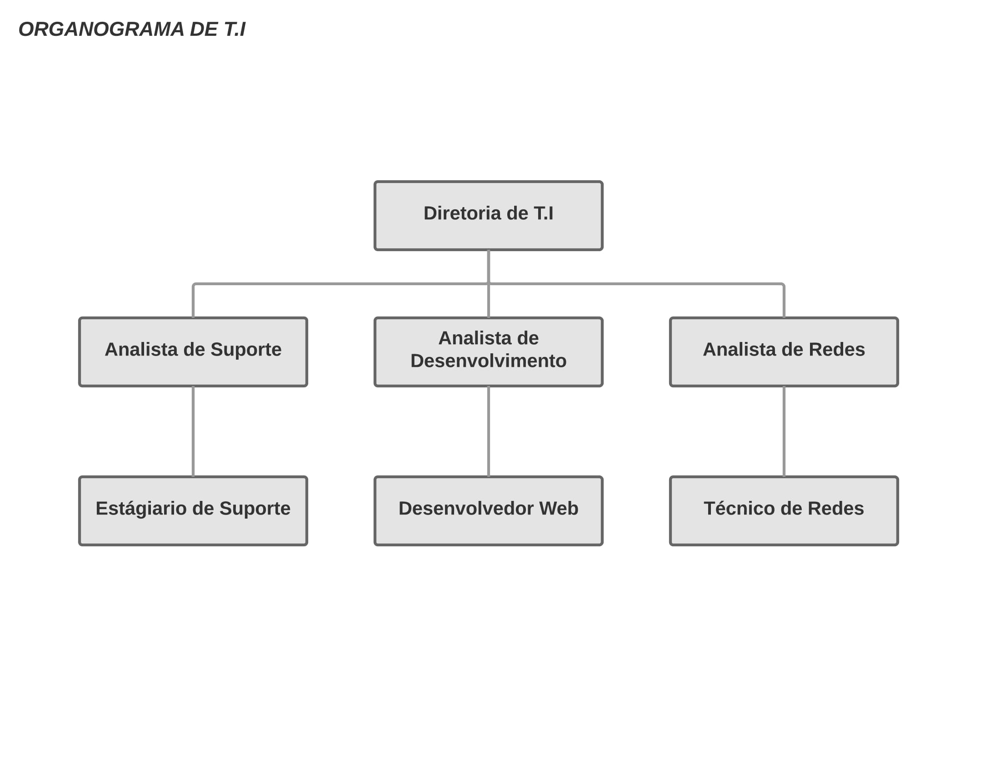
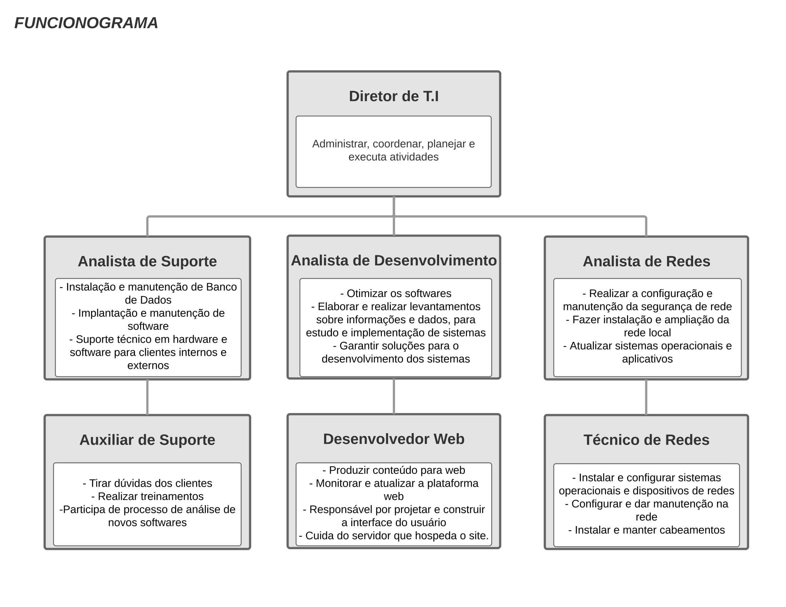
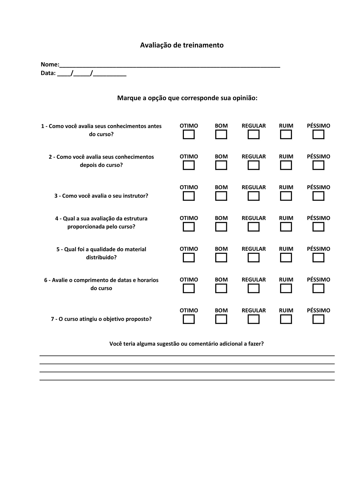

Desenho de Cargos e Tarefas
Desenvolvedor Web responde pelo desenvolvimento de aplicações para Web, ou seja, consiste em planejar, construir, testar e dar manutenção em sites e aplicações de internet. Seja eles, Sites institucionais, blogs, lojas virtuais, sistemas web e diversos tipos de aplicações que rodam em plataforma web. Responsável pela codificação, depuração e testes para aplicações Internet / Intranet. Participa do levantamento das necessidades do cliente, contribui na construção do modelo conceitual do site a ser desenvolvido. Possui conhecimentos avançados sobre linguagens e programas para desenvolvimento Web, tais como:
Na camada de apresentação HTML, CSS e Java script como tecnologias obrigatórias. Na camada de regra de negócios a linguagem PHP e a tecnologia ASP.NET é o ponto de partida. Na camada de dados o SQL e alguns dos bancos de dados mais usados na web, como o MySQL e o SQL Serve, são imprescindíveis. Existem algumas outras ferramentas opcionais como: VBScript, Visual Basic, Java, ASP, Perl, Cold Fusion, FrontPage, DreamWeaver, Ruby on Rails, HomeSite, GoLive, Visual InterDev, Drumbeat, JDeveloper, entre outros.
Um Desenvolvedor Web domina plenamente as atividades de sua função. Para o desenvolvedor a autonomia é um ponto importante, embora ele tenha que trabalhar em equipe, suas decisões precisam ter um toque pessoal. Saber interpretar os problemas e apresentar soluções simples são competências altamente desejáveis.
Programa de Treinamento
Cargo: Desenvolvedor Web
1 – Levantamento de Necessidades
Após feita uma avaliação, a pedido do gerente da área de T.I, e foi constatado a necessidade de um programa de capacitação dos colaboradores da área de Desenvolvimento Web na empresa.
Através de feedback feito entre os colaboradores, verificamos as dificuldades de cada funcionário no dia-a-dia, além da necessidade de aperfeiçoamento e atualização para novas tecnologias, buscando uma melhor qualidade de trabalho.
Assim, foi constatado que precisa ser realizado treinamentos nas linguagens de programação: CSS, JAVA e MYSQL.
2 – Programação e Planejamento
Para sanar as dificuldades e para o aperfeiçoamento dos funcionários, será realizado cursos das linguagens CSS, JAVA e MYSQL. Uma empresa será contratada para ministrar o treinamento, sendo, a mesma, responsável pela distribuição do material didático necessário.
O curso terá duração de 30 dias, sendo realizado nos laboratórios disponibilizados pela empresa contratada. A organização se responsabiliza pelos custos, com o intuito que todos os funcionários participem, levando assim a empresa a ter capacidade de realizar todas as demandas, buscando sempre as melhores condições.
3 – Execução
A empresa contratada disponibilizara a estrutura adequada para a realização do curso. Será disponibilizado: Laboratório de Informática; Materiais didáticos; Intervalo para lanches; Datashow, e as demais necessidades básicas para a realização do curso. O gerente de TI acompanhará o treinamento, para melhor avaliação dos colaboradores.
4 – Avaliação
Para verificar se o curso obteve o resultado desejado para a organização e consequentemente desenvolver treinamentos cada vez mais eficazes, os funcionários serão avaliados através de avaliação de conteúdo, com o intuito de verificar se o conteúdo foi bem absorvido pelos profissionais, e Feedback, para saber se as metas estabelecidas anteriormente foram alcançadas através do curso.
